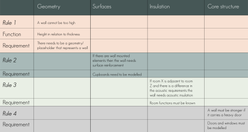
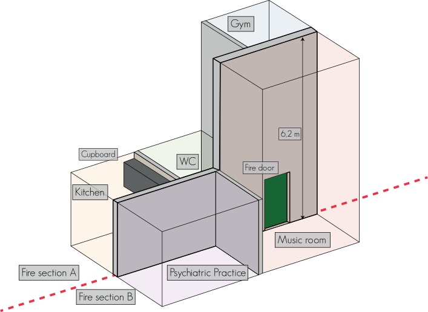

From "Cardboard Engineer" to Linked Data Engineer
Agenda
- Basically a retrospective of my professional life
- Takeaways highlighted along the way
- If there is time: More details on selected projects
Master's thesis
2012-2013
Overall flow
- Building owner defines room types and their ICE requirements
- Design stage
- Engineers set technical boundary conditions
- Spaces in IFC model coded with room types
- Design frames exported to IDA ICE template and IFC loaded
- Simulation performed
- Results exported
Shortcomings
- Required manual cleaning of model in SimpleBIM
- Database schema not easily extended
- Still some post-processing in IDA ICE desktop app
- Web app was coded from scratch (no framework) in PHP and was a big mess 😁
What I've later come to realize is that it was quite a hacky demonstation project with a non-scalable RDB model that proves that:
As engineers, we love to create our own fancy systems that solve one particular task. But how will it scale? How does it fit with sorrounding data processing tasks in the project?
My research
Problems in scope
- We do BIM, but it involves perhaps 25 % of the knowledge we generate
- Complex and interdependent project documents are handled in a manual fashion
- Accessing information is hard and requires manual work
- Most of your time is spent on revising project material to reflect recent changes
- ...and answering e-mails to other project participants who need information that is hard to dig out of the fragmented project material
- Knowledge and traceability is lost as people change jobs
Some research highlights
- BOT: The Building Topology Ontology
- OPM: Ontology for Property Management
- FSO: Flow Systems Ontology
In my research I realised that while creating cool tools is awesome,
the important part is to establish a common language
and shared understanding
...but as our industry involves so many different stakeholders, a global common understanding is unattainable!
The very intention of BOT is to provide a minimal, extendable common core.
ConTech Pioneer Project 5

How can boundary conditions for walls be described in a semantic data model so:
- The architect doesn't need to create detailed drawings
- IKEA like manuals could be machine generated for the specific wall
- The architect can continiously check the design against manufacturer solutions
- The wall could potentially be custom made by the manufacturer
A set of rules were defined
A demo model was created
Rule 1
Rather simple: "What's the wall's max height?"
For the remaining rules, instead of describing properties directly on the walls, they were inherited to wall surfaces based on space demands
Rule 2
Something heavy is mounted on the wall -> it needs a reinforced surface!
Rule 3
A quiet room and a loud room are separated by this wall -> it needs acoustic insulation!
Rule 4
A heavy door is carried by the wall -> it needs structural reinforcement!
Intelligent systems can infer the implicit knowledge from the bits and pieces that we feed it
BART Stage 2 delivery

Incremential reasoning
BART Stage 3 delivery
The potential of incremential reasoning
Final remark
The technology is maturing - all the bits and pieces are already there
Go and create something meaningful with it! 🚀🚀🚀
Thank you for your attention!
Questions? Thoughts? Ideas? Let's discuss them over a ☕